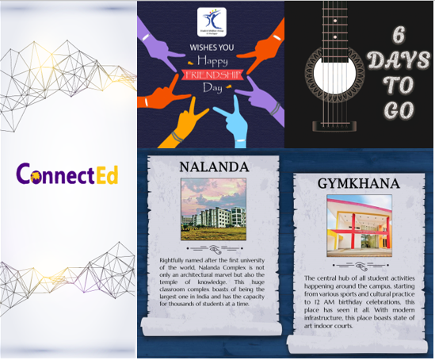
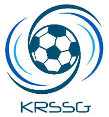

I am Tanaya Ramane, a third year undergraduate from the department of Industrial and Systems Engineering, IIT Kharagpur
enrolled in the course of Quality Engineering Design and Manufacturing (Industrial Electronics
vertical). I define myself as an innovative, creative, helpful, friendly, and a leader. Since
childhood I have been curious about how things work and what more improvisations could be done on it,
for this I joined KRSSG(curiosity about how bots work and making one whole by myself was a very
fascinating thought). Public speaking as an hobby has been inculcated in me due to various elocution
competitions I participated in school and college, the client interactions I had being a part of the
client acquisition team in 180 Degrees Consulting,IIT Kharagpur, other than that watching TED Talks is
also one of the reasons. My hobbies also include sports such as swimming and badminton. I am a trained
Kathak dancer and I love freestyle as well. Music fascinated me a lot so I learned classical singing and
have completed three levels of the same and one of Harmonium.
MY Work

Designing
Designed posters, log in, sign up pages, splash screen, collages and much more. Worked on the UI/UX graphics of the SWG’s Foresight app: this app consists of success stories of students in placement and internship
which is useful for guidance for aspiring juniors, it also contains perspectives of previous batches about KGP and its culture. I was also a part of the yearbook team which designs the yearbook for the graduating batch of 2020. Yearbook is a volume that captures memories of the graduating batch. My work can be found here

Technology Innovation Idea
My technology innovation idea was selected for the Goldman Sachs: Women’s Possibilities Summit- Finance and there I was introduced to various opportunities in the field of finance and the scope of improvement in data handling, data processing and presenting, short case study on quantitative finance. The slides for which can be found here

ConnectEd
ConnectEd is a start-up idea aiming to create Alumni networking platform, to connect alumni with their universities and schools
Responsible for UI/UX of the app and the website. Decided the base features such as trending fields, Badge account verification, etc.
Designed and implemented the features and also did wire-framing. Screenshots of implemeted designs and documentations can be found here

KRSSG
KRSSG, research group that makes autonomous robots. The selection process consists of three technical rounds with 1500+ applying
Underwent basic training of Analog and Digital electronics and worked with softwares such as Arduino Uno, Xilinx and LT Spice
Studied Hall effect and its application as a hall-effect sensor in motor driver, made K-map, commutation table and Arduino code for it. Mentored 60 robotics enthusiast with basic embedded concepts like mosfets, op-amp, rectifier, filter circuits, number systems, logic
gates, Boolean Algebra, Multiplexers, Demultiplexers, ADC, registers, Arduino, motor drivers, sensors, switches, flip flops. The task submissions can be found here

Operations Research project
Made a model in Cplex to predict optimal number of covid vaccination stations, their location and allocation to demand groups
We devised a two stage linear programming formulation to incorporate the allocation of demand groups to the vaccination stations and allocation of Electronic Vaccine Intelligence Network’s (eVIN) cold storage points to the vaccination stations. We have current;y tested our Cplex model on
test data, and we are now trying to test it on data for Chandigarh. The documentation for the same is here
Others
Consultant | 180 Degrees Consulting, IIT KGP Jul 20 – Present
As a part of Growth Strategy Team, I look at client acquisition, negotiation, on boarding and social media presence
Key member of the Logistics Team of PCC 2020 in association with PM School which involved 100+ team registrations.
Boston Consulting Group- Virtual Experience Program:
o Built an efficient Marketing plan to enhance the profitability of a Telecom Service Provider.
o Proposed a Handset Leasing Model after understanding the Consumer behaviour and applying Market Research Concepts. The relevent documentation can be found here


{kind=link}
{kind=link}